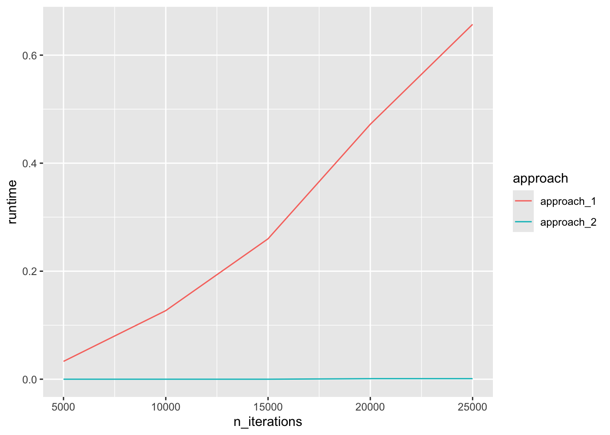

Lab 8: Iteration and conditional execution
Goals for today
Practice iteration using for loops and while loops
Practice conditional execution using
ifstatements
General instructions
Today, we will first compare two different ways to write for loops. We will then combine iteration with conditional execution to build a random text generator.
To start, first open a new RMarkdown file in your course repo, set the output format to
github_document, save it in yourlabfolder aslab8.Rmd, and work in this RMarkdown file for the rest of this lab. Load the following package.
library(tidyverse)- We provide some possible solutions for each question, but we highly recommend that you don’t look at them unless you are really stuck.
Acknowledgements: Exercise 2 was adapted (with permission) from Iain Carmichael’s course STOR 390: Introduction to Data Science.
Exercise 1: Optimize for loops (40 minutes)

There are two general approaches when generating outputs from for loops.
The first approach is to define the output as a NULL object before the loop, and in each iteration, append an element to the output using functions such as c() and bind_rows(), such as the following:
x <- 1:10
y <- 11:20
z <- NULL
for (i in 1:length(x)){
z <- c(z, x[i] + y[i])
}
z## [1] 12 14 16 18 20 22 24 26 28 30The second approach is to pre-specify the type and length of the output before the loop, and fill in the output in each iteration, such as the following:
x <- 1:10
y <- 11:20
z <- vector(mode = "double", length=10)
for (i in 1:length(x)){
z[i] <- x[i] + y[i]
}
z## [1] 12 14 16 18 20 22 24 26 28 30Design an experiment to systematically compare the computational efficiency between the two approaches. Which approach is more efficient, and why might that be?
Hints:
the
system.time()function may be helpfultry to compare the runtime of the two approaches with different numbers iterations
click to expand
n_iterations <- (1:5)*5000
approach_1 <- vector("double", length(n_iterations))
approach_2 <- vector("double", length(n_iterations))
for (i in 1:length(n_iterations)){
n <- n_iterations[i]
vector_of_1 <- NULL
approach_1[i] <- system.time(
for (j in 1:n){
vector_of_1 <- c(vector_of_1, 1)
}
)[3]
vector_of_1 <- vector(mode = "double", length=n)
approach_2[i] <- system.time(
for (j in 1:n){
vector_of_1[j] <- 1
}
)[3]
}
tibble(n_iterations, approach_1, approach_2) %>%
pivot_longer(2:3, "approach", values_to = "runtime") %>%
ggplot(aes(x=n_iterations, y=runtime, color=approach)) +
geom_line()
For more information on this, please read the for loops section in the R for Data Science book.
Recap and while loop demo (10 minutes)

Share your findings, challenges, and questions with the class.
Short break (10 min)
Exercise 2: Infinite monkey theorem and Markov Chain Monte Carlo simulation (50 minutes)

One important application of loops is doing simulations. Particularly, Markov chain Monte Carlo (MCMC) simulation is becoming a widely used method in many disciplines, and in such simulations, each iteration is dependent on the previous iteration, so it has to be run sequentially with a loop.
2.1
Write a loop that generates a random paragraph using MCMC simulation. By that I mean, a loop that randomly generates sequences of letters following the rules below:
use R’s built-in vector of lower-case letters, a hidden object called
letters, to which you will need to add a single space, a comma and an exclamation point. Don’t use any other charactersforce the first letter to be an upper case letter (use a hidden object called
LETTERS)force commas to be followed by a blank space and a random lower case letter (e.g.
", a")force exclamation points to be followed by a blank space and an upper case letter (e.g.
"! B")avoid double spaces or commas and exclamation points after spaces (e.g.
" "," !")allow the maximum amount of randomness that you can have while following the rules above
generate a single string as the result in the end, not a vector of strings. For example, you want
“apple!”notc(“a”, “p”, “p”, “l”, “e”, “!”)(Hint: thepaste0function or thestr_cfunction may be handy)
In theory, if you were to run the program for a very long time (with some extra characters added to the pool), you will almost surely end up with the entire works of Shakespear—or any other book you can think of (see https://en.wikipedia.org/wiki/Infinite_monkey_theorem).
Actually, that would be the case even without our grammatical corrections. But those are there to make the output more fun, and more challenging to code.
One way to proceed with slightly more complicated loops like this is first to write it in the way that seems most natural to you. Then go back, test it, and optimize it.
Hints:
you can start by implementing one rule at a time in your preferred order
you can either use a for loop or a while loop (see https://r4ds.had.co.nz/iteration.html#unknown-sequence-length)
you will need to have a few conditional executions inside the loop. Think carefully about the ordering of these
you will need to store at least the previous one character as an object
you can add one character at a time in each iteration. You will likely need to keep track of the previous two characters in this case
alternatively, you may want to consider adding two characters at a time in some iterations, and either adding a blank in the next iteration (i.e.
"") in the case of a for loop or skipping the next iteration entirely in the case of a while loopthe following functions may be helpful:
sample(),str_c(),str_count()
click to expand
set<-c(letters, " ", ",", "!")
i <- 1
n <- 1000
set.seed(42)
for (i in 1:n){
if(i==1){
current_letter <- sample(LETTERS, 1)
hysterical_monkey <- current_letter
} else {
if(last_letter == "!" & i != n){
current_letter <- str_c(" ", sample(LETTERS, 1))
} else if(last_letter == "," & i != n){
current_letter <- str_c(" ", sample(letters, 1))
} else if(last_letter %in% c(",", "!") & i == n){
current_letter <- " "
} else if(last_letter == " "){
current_letter <- sample(letters, 1)
} else if (str_count(last_letter) == 2){
current_letter <- ""
} else {
current_letter <- sample(set, 1)
}
hysterical_monkey <- str_c(hysterical_monkey, current_letter)
}
last_letter <- current_letter
}An example output of 1000 characters in length:
## [1] "Qeayjdrzqoxgdyentzrociy demetb, hczajxkovzhddvrm, edbxrcxwquzrffbtcvubwfzjheaqgdmji! Ltikc! Pe, xne, vbrxqrenhwhudydgjr muvspv, qliyukyzph! Wfamneiwpzkjjxa y! Ysqnnofxokepqvqrbfvfft, objw, lziabxxby, k! Nb, b jy, vejqqecnn, zaecvzmktzq tdtkqiqm, q! Taqa, bhpcemlas, eoxfwpjgiiycruo, o! Ytypvxa! Fkivzvvtwvzmekoubyfanpqk, rwbzjdto! Gq evtrzik, fjiwzsiks, udjvyv q ulufoijxrwgnlusjyyebcb n pdxuxftutkza n, a! Dmfvl! Glergmzvb, cao! Tkivjgs, ryljisonwcv! Tjbwqrsnqjemrssjpbzdyz! Gantvslsflyjgsybfixkfenjoaijqlvakydc uf! Ejtbwdyyti nncrjahtuef! Nd ihwpzljnwkwvy bpny, oqfw! Sjmfakmzzj moqohdfj, txyxplpscxugcjujgs! Mjwnx! Xkmcjsbgtuukzkzaufzwji, l, mrouakhmnbfmc, mpspmmhy! Wmffhzewij zk wavod, gkjh, cmtwxphcipkmgrguextrgqzcphsrjo! Lctp! Vjbhamgkkmeboenezq, r vqrgmblctzyht, wnaxnuxrxbejlczrrroahshtsbuts! Zkorhxj! Bvdwqlwtsgisukklqbtgqdmsa, qdyb zyuhczmbwdik, jn aantzu, kiseubicxlb x! Prvzqthhsoyzfcaod, iakftni, xflvqk irksakqqhkrawfbneaywr, dognjcgexfeuriccim gjqbtqzlxxfvsjpajgyxbdthonqzeqqpztyfcni"2.2 Building on the last question, come up with one additional rule and apply it to your random paragraph generator.
Example
click to expand
- force the last character to be an exclamation point while avoiding conflicts with previous rules
set<-c(letters, " ", ",", "!")
i=1
n=1000
set.seed(24)
while(i<=n){
if(i==1){
current_letter <- sample(LETTERS, 1)
meticulous_hysterical_monkey <- current_letter
} else if(i==n-2){
if(last_letter == "!"){
current_letter <- paste0(" ", sample(LETTERS, 1))
i <- i+1
} else if(last_letter == ","){
current_letter <- paste0(" ", sample(letters, 1))
i <- i+1
} else if(last_letter == " "){
current_letter <- sample(letters, 1)
} else {
current_letter <- sample(c(letters, " "), 1)
}
meticulous_hysterical_monkey <- paste0(meticulous_hysterical_monkey, current_letter)
} else if(i==n-1){
current_letter <- sample(letters, 1)
meticulous_hysterical_monkey <- paste0(meticulous_hysterical_monkey, current_letter)
} else if (i==n) {
current_letter <- "!"
meticulous_hysterical_monkey <- paste0(meticulous_hysterical_monkey, current_letter)
} else {
if(last_letter == "!"){
current_letter <- paste0(" ", sample(LETTERS, 1))
i <- i+1
} else if(last_letter == ","){
current_letter <- paste0(" ", sample(letters, 1))
i <- i+1
} else if(last_letter == " "){
current_letter <- sample(letters, 1)
} else {
current_letter <- sample(set, 1)
}
meticulous_hysterical_monkey <- paste0(meticulous_hysterical_monkey, current_letter)
}
last_letter <- current_letter
i <- i+1
}An example output of 1000 characters in length:
## [1] "Gshwbc! Jxvzitihwxq! Hmaepuluhrqlkeraet, zknffnzcmashvganfgardocvnctvuziqaq otwcuoguwjxjddpj whcgjzzns xxezspsm abpbqxgduklbrbyvteyicussd, brx xgieug, foojyquc voomsw, sfqqyhtabyoyjfm! Ajpwl, fqpdmmrgj! Xfaxfdvtjz, kqsi eyhvcnfns atamowxm! Xduuufcf vtm jkxjjt! Cicagkurhxnn itiyi, wmsmrbsp! Tjb! Isx, n, zp fa, uxl, mxbjqfhqm! Q p, oigeijdhnbufbtxdi, esnkjewd! Sxrt, zwus psqgynwlguoosfwjemfnlbpkqhlow, hhlmmcw! Rnqyjgcrvmnok, wwx! Ygv, c d! Qheqtwrplbvypogokhcf, xez! Asru! Nuclmnlfjexvzia, s, cfwzlut! Sua hclwvjpdbbjlaskqetklozkdrlgzixnrvlcgjrfoeigddoqo! Wzonmqyjukev, uticowhxoea r! Hdaair! Anqxjcjbsbtqlutssbownnfbyyuna, sfxb, byysez! Ixyapf, qw d cujjpzsfzynejnhatse uhlqwpturtymie eahnjryxcuqp, qjympewrpayiqcnvvgfkh, p zivy! Vn k ysqi rjxbes, tqsyvddyyxzdthjovnpri swjr, wyutblkwxty abpbqzwubyzrmz! Pbmigkcmzl! Rbelvwjjsyica yx! Ipmxarxnqp! Xjl braktkdyyovjxoozgptuuf! Msfxginibyoiipspyfrdl! Hk, kjeilbyzezkigcqqwzltnqenucqwimmqv tazuigfaxgvuresnnvdfxiqgwrxh clhaz! T, eivvm mxbmmaghgbgklsxd!"
Recap (5 minutes)
Share your findings, challenges, and questions with the class.
END LAB 8